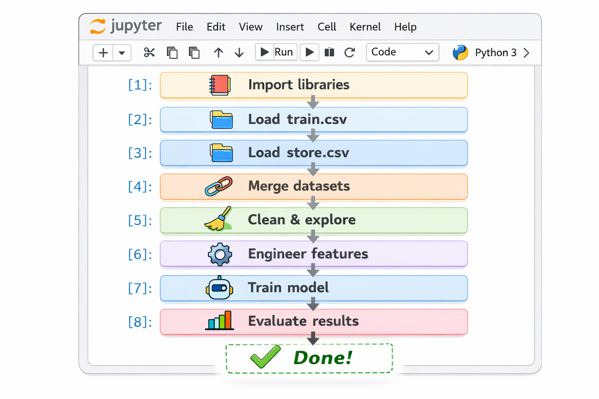
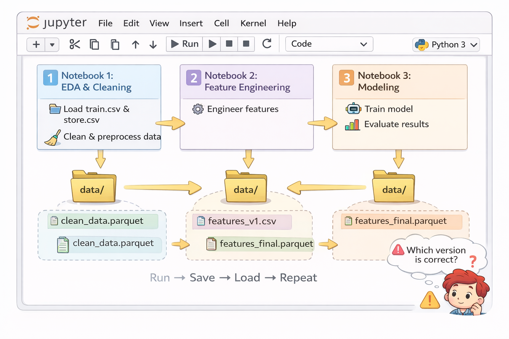
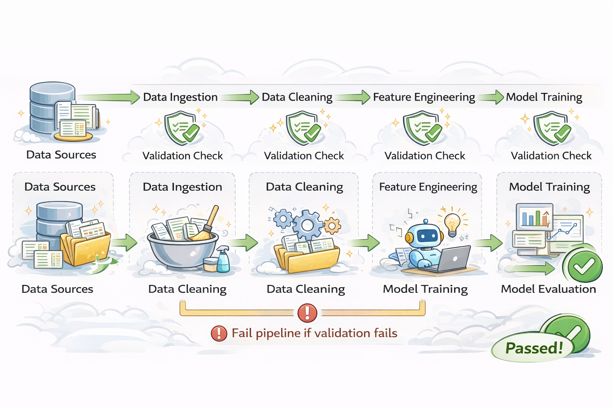
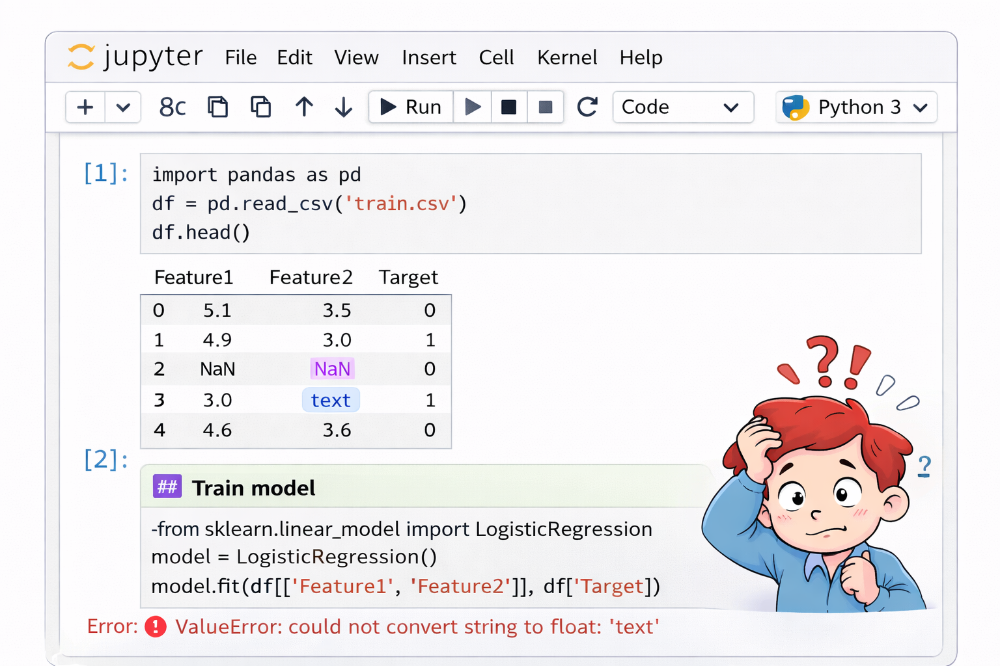
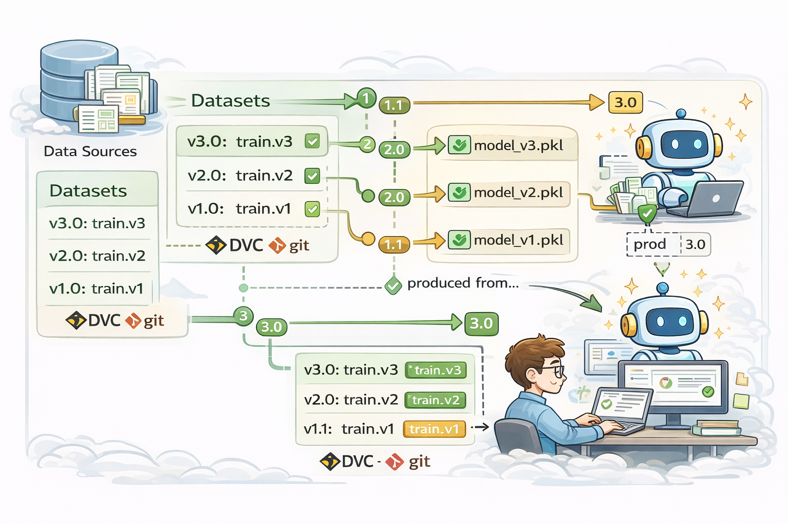
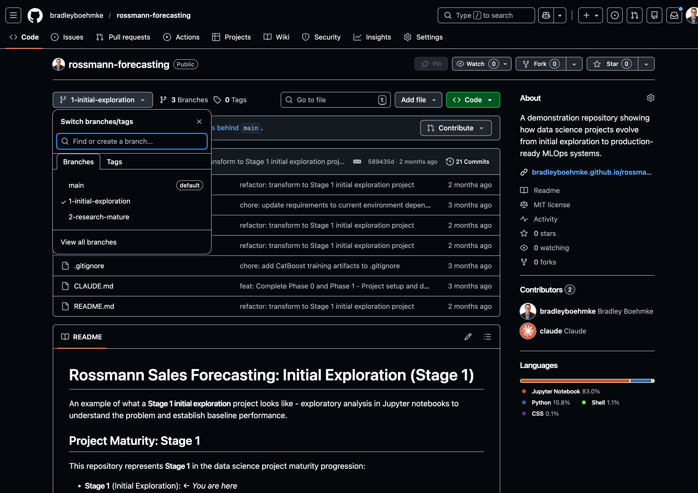

A practical introduction to DataOps and pipeline design
Bridging the gap between classroom and industry
This series shares best practices and industry standards not always covered in coursework — practical skills that can differentiate you early in your career.
Today’s Goal
Walk out understanding how to transform exploratory notebooks into reliable, production-ready data pipelines.
Typical workflow:

Academic vs. Industry
In academia, you often complete this entire workflow in a single notebook for assignments. That’s perfectly fine for coursework — it gets the job done and helps you learn. But in industry, we need something more robust.
Business Problem:
Forecast daily sales for 3,000+ retail stores across a full region for the next 6 weeks
Note
This is a real-world forecasting problem from the Rossmann Kaggle competition: https://www.kaggle.com/c/rossmann-store-sales
Production challenges:
Typical workflow (1-3 notebooks):

Manual execution: Run → Inspect → Run next → Repeat
In school:
In industry:
The Evolution
Notebooks for exploration → Structured pipelines for production
We’ll focus on the data pipeline piece today.
Turn to your neighbor (2-3 minutes):
Discuss what could go wrong when running this notebook workflow in production.
Think about scenarios like:
DataOps
A set of practices for building reliable, automated, and maintainable data pipelines
Core Principles:
Modularity
Breaking code into reusable, testable components
Why it matters:
Notebook structure:
notebooks/
└── 01-analysis.ipynb
├── Cell 1: load_data()
├── Cell 2: clean_data()
├── Cell 3: merge_data()
├── Cell 4: build_features()
├── Cell 5: train_model()
└── Cell 6: evaluate()All functions defined inline
Problems:
Project structure:
project/
├── notebooks/
│ └── exploration.ipynb
└── src/
├── data/
│ ├── load.py
│ ├── clean.py
│ └── validate.py
├── features/
│ └── build.py
└── models/
└── train.pyBenefits:
Tip
Notebooks for exploration, src/ for production code
Let’s see this in action with the Rossmann project…
Quality Assurance
Validating data at every stage to catch errors early
Why it matters:

Typical workflow:
.head() or .info()
The Problem
If anything changes with data quality, you don’t find out until you run a cell and get an error
Great Expectations
A Python library that helps validate your data has the quality and characteristics you expect for downstream analysis.
How it works:
--fail-on-error)Let’s see this in action with the Rossmann project…
Version Control
In industry, we track changes to code, models AND data over time
Why it matters:

Typical situation:
Warning
“Our model performance dropped. Was it code changes or data changes?”
You’ll never know.
Benefits:
Let’s see this in action with the Rossmann project…
Automation
Running pipelines without manual intervention
Why it matters:
Daily ritual:
Warning
This doesn’t scale. What if you need to run this 100x/day?
Rossmann approach:
This single command:
Or schedule it:
Let’s see this in action with the Rossmann project…
Reproducibility
Same inputs → Same outputs, every single time
Why it matters:
Common issues:
Warning
Even you can’t reproduce your own results 6 months later
When you combine:
The Result
Reproducibility isn’t a separate thing to implement — it’s what you get when you follow the other principles
Let’s see this in action with the Rossmann project…
Don’t Start With Complexity
Projects evolve and mature progressively over time. You don’t build all this on day one!
Stage 1: Early Exploration (Notebook-based) → Quick insights, manual process, experimentation
Stage 2: Research Matures (DataOps) → Add modularity, reusable components, automated data pulls, validation
Stage 3: Production Ready (Full MLOps) → In-market testing, model registry, API, monitoring, CI/CD
Explore the three branches in the Rossmann repository to see how the project evolves from notebook-based exploration to a full DataOps pipeline:

In school and early in your career:
As you prepare for industry:
The Key Question
“Can I run this reliably, repeatedly, and reproducibly?”
Take time to explore how a simple Kaggle dataset can mature into a production-grade system:
What to look for:
Three branches to explore:
Find simple data pipeline projects to practice these principles:
Basic Notebook Example:
Production-Grade Example:
Jeff Whitcomb’s Yahoo Finance Pipeline
src/ structureTip
This is what employers want to see
Questions?
Resources: